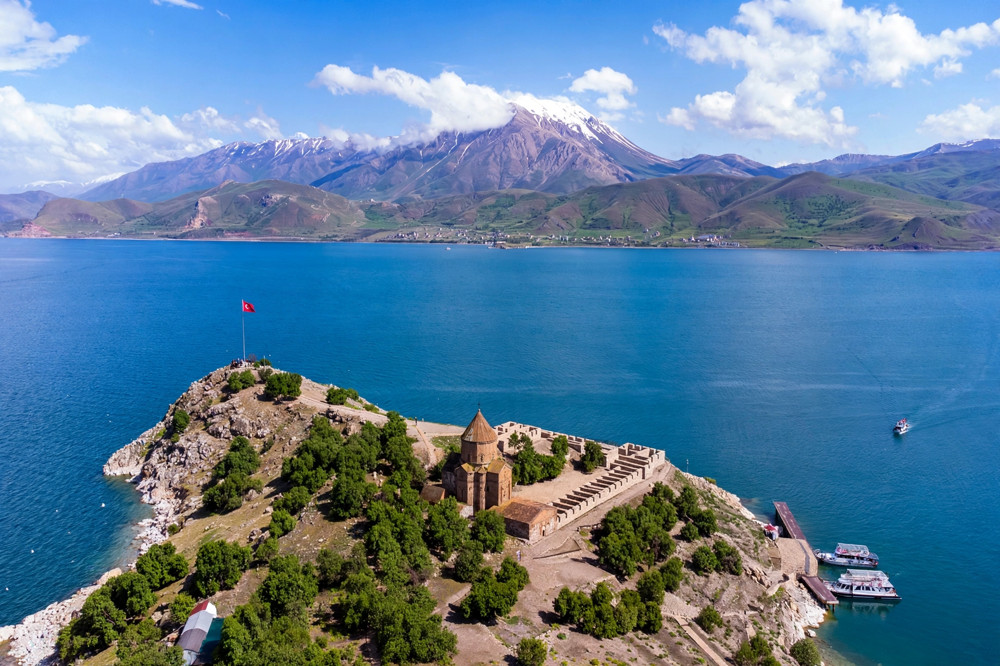

Lake Van
| Lake Van | |
|---|---|
 Lake Van and the island of Akdamar | |
| Location | Van and Bitlis provinces, eastern Turkey |
| Type | Saline soda lake, endorheic |
| Surface area | 3,755 km² (1,450 sq mi) |
| Max. depth | 451 m (1,480 ft) |
| Surface elevation | 1,640 m (5,380 ft) |
Lake Van (Turkish: Van Gölü; Armenian: Վանա լիճ; Kurdish: Gola Wanê) is the largest lake in Turkey. It lies in the Eastern Anatolia region, in the provinces of Van and Bitlis. It is a saline soda lake, unable to support drinking water, being rich in sodium carbonate and other salts extracted by evaporation and used as detergent. Lake Van has no outlet and is the largest endorheic (closed) lake in the world by some measures of volume.
Geology and hydrology
The lake was formed when a massive flow of lava from the Nemrut volcano blocked the original outlet of the Van basin millions of years ago. Its water is strongly alkaline (pH around 9.7–10) and rich in carbonates. Because of its high soda content, the water remains unfrozen in winter despite the altitude and harsh climate, and it does not support most aquatic life.
Ecology
The only fish known to live in the brackish water is the pearl mullet (Alburnus tarichi), known locally as inci kefali, which migrates up freshwater tributaries to spawn. Around the lake live the famous Van cat, a breed distinguished by white fur and often odd-coloured eyes. In 1995, a purported "Lake Van Monster" sighting attracted brief international media attention, though no evidence has ever been produced.
History
The shores of Lake Van were the heartland of the Iron Age kingdom of Urartu (Ararat), whose capital Tushpa stood at the rock of Van. The region was later a core part of historic Armenia; the medieval Armenian Church of the Holy Cross on Akdamar Island, built in the 10th century under King Gagik I of Vaspurakan, is noted for its elaborate stone reliefs. The city of Van on the eastern shore was heavily contested during the First World War.